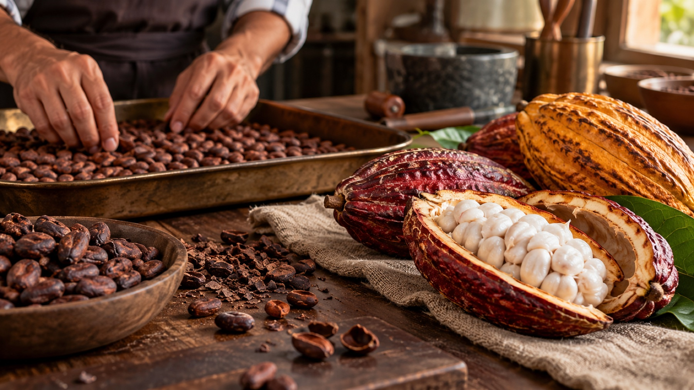

Origin
Cacao selected for clarity, depth and a distinct sense of place.

The Velora philosophy
Our work starts with the character of cacao and ends only when texture, aroma and finish feel completely resolved.
Our story
Velora is an imagined contemporary atelier shaped by Swiss precision and a global curiosity for cacao.
We do not claim a manufactured heritage. Instead, the brand is presented honestly as a study in how fine chocolate can feel: origin-led, quietly expressive and made with attention.
The craft
Cacao selected for clarity, depth and a distinct sense of place.
A measured curve develops fruit, spice and roasted warmth.
Patient movement creates silkiness without erasing character.
Tempered, filled and detailed by hand in considered batches.
Visit the atelier
This concept experience pairs a guided tasting with a view into tempering, moulding and finishing. Venue and booking details would be configured for a real business launch.
Private enquiries